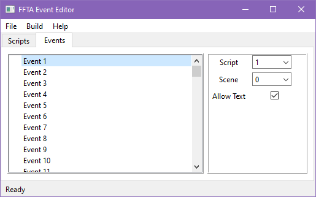
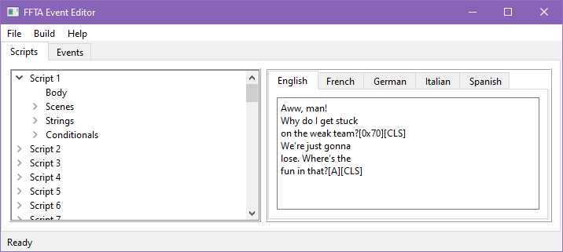
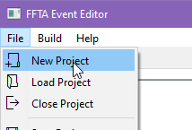
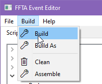

In short, FFTA Event Editor con extract event data from a FFTA ROM. It then allows you to edit this data and produce a modified ROM.
Through this process, the cutscenes in the game can be altered or completely rewritten. This includes everything from the lines each character say to the map the events take place in, the movements the characters perform and the conditions under which the events happen in the first place. Therefore, by using this tool it is possible to create a fully custom story as well as missions with custom win conditions.
Once a project is created or loaded, there are two tabs that can be accessed:

Through the events tab, the user can define which script and scene is to be executed when an event is triggered.
This is the simplest tab, which controls the topmost level of event execution. When a new game is started, Event 1 will run.
When an event runs, a specific scene of a specific script plays.
Other than when a new game is started, conditionals determine when a new event is triggered.

The scripts tab gives access to the different pieces of data required for a cutscene to function.
Changing the number of scripts, scenes or strings is not yet supported.
The body contains the code that will be executed for all the script's scenes.
By editing this, you can change what happens when each of the scenes plays out.
Not all script instructions are documented yet.
Under "Scenes", you can determine which label marks the start of each of the script's scenes.
Whenever a scene is played, code will start running from wherever that scene's label is found.
Strings represent the text that can be displayed in the game.
When editing a string, several languages will be available if a European copy of the game was used as the project's base.
Other than text, strings feature control codes, which can change how the text is displayed or perform other special actions.
Not all control codes are documented yet.
Conditionals are small scripts that run at specific points during gameplay.
These scripts use a different language than that of the body. They determine when the next event should activate.
The particular trigger that makes a conditional script run is different for each of the conditional scripts:
Not all conditionals instructions are documented yet.
Creating a project is very simple. First, locate the File/New Project option and click on it:

A file dialog will appear. Select your European or American/Australian FFTA backup copy.
Once the project has been created, it is recommended to save the result (File/Save Project).
Keep in mind that, while the project does not contain the entirety of the ROM data, it does contain the game's cutscene dialogue. This is an asset protected by copyright, and it should not be distributed, meaning you should not send your project files to other users.
It is also recommendable to 'Assemble' the data. You can do this through Build/Assemble and, once it is done, save your project. Data will be assembled for every script, but it will only be assembled again if a script changes. Therefore, the first assembly will take a longer time, but future ones should take almost no time.
Assembling is necessary both for building an output ROM, which will automatically perform assembly if required. Additionally, it is required to gather labels to use in the Scene editor's dropdown.
In this section, we will see how to implement a simple event cutscene.
An event has several components to it, all of which work together to make the cutscene play out. For this tutorial, we will be editing Script 1, which is invoked by Event 1.
We will modify the body, some strings, as well as some conditionals. As we make the changes, we will also comment on them.
First, replace the Script 1's Body with the following script:
start_0:
_UNDEFINED_83_ 1 // necessary for the first script of the game
SET_MAP 12
SET_MAP_TYPE 1 // battle map
START_MAP
PLAY_SONG 22
FADE_MUSIC 100 1 1 // fades the music to max volume in a single frame, effectively setting the volume instantly
// we can use LOAD_CHAR to load characters even if they are not part of formation data
LOAD_CHAR 2 /*<- character id*/ 0x45 /*<- unit position*/ 0 /*<- facing direction*/ 32 1
// we can use LOAD_UNIT to move a unit to a different position other than the one defined by formation data
LOAD_UNIT 23 139 1 3
// move the camera while fading the screen, all at the same time
run thread
{
CAMERA_MOVE_TO_POS 152 204 1 130
}
run thread
{
FADE_SCREEN 19 60 100
}
JOIN
/*
at the same time we show some dialogue, we start a thread that will enable a flag after 4 seconds
this is something the vanilla game never does, branching execution based on how long you took to read
if the player goes by at a normal reading pace, they will see nothing special
however, if the player takes longer, they will see an extra line of dialogue
*/
run thread
{
SLEEP 240
SET_FLAG 600 1 // if the time is over, set the flag!
}
CHAR_TALK 0 2 164
// now, if the flag is set, we play the extra dialogue
if flag 600
{
CHAR_TALK 1 2 164
}
_UNDEFINED_23_ 4 // snowball battle start
start_1:
SET_FLAG 769 1 // enable pub rumors
SET_FLAG 1083 1 // make "herb pickings" available
SET_FLAG 1408 1 // hide "dummy" rumors
// set other flags that would normally be available by this point
SET_FLAG 513 1
SET_FLAG 512 1
SET_FLAG 595 1
SET_FLAG 580 1
SET_FLAG 581 1
SET_FLAG 768 1
_UNDEFINED_29_ 3 // set the current script, we are skipping script 2 and going straight to 3
// we can fade the music and the screen at the same time
run thread
{
FADE_MUSIC 0 60 1 // fade to volume 0 in 1 second
}
run thread
{
FADE_SCREEN 49 60 0 // fade to black in 1 second
}
JOIN
_UNDEFINED_23_ 5 // go to world map
// even though we are not using the other scenes, we need to keep their labels in the script's body
start_2:
start_3:
start_4:
start_5:
start_6:
start_7:
Scripts are, in essence, a list of instructions for the game to execute.
The script has plenty of comments, but there are some things worth pointing out:
Labels are reference points the script can use, they look like: "name:", where name is the label name. For example, "start_0" is the label we are using to mark the start of scene 0. Scripts can also have internal labels, which can only be referenced inside the script, which we can use to keep things more organized. Internal labels look like "$name:", with a $ in front.
By using "if (not) flag X { ... }", where "not" is optional and X is the flag number, we can run code conditionally.
By using "run thread (X) { ... }", where X is an optional thread group, we can start concurrent execution of a piece of script. By doing this, we can run different things at once, such as making characters pace back and forth while others character talk, or fading the screen and music in and out. With "JOIN", we can make the script wait for threads to complete before continuing, or we can use "JOIN_TAG X" to wait only for threads of group X.
If you want to modify the units present in the mission, you will need to use one of the already existing tools for that purpose, such as FFTA Editor: AIO (All in One).
Next, replace Script 1's String 1 and String 2 with the following:
Let's fight![A][CLS]
Are you a slow reader?[A][CLS]
Strings are formed by characters (like 'a' and ' ') and control codes ('[A]', '[CLS]').
[A] prompts the player to press the A button to continue, while [CLS] clears the textbox.
If you are working on a European ROM project, be sure to translate the strings for other languages!Finally, replace all the conditionals with the following:
start_0: END
Except for the 'Turn end' conditionals, which will be:
start_0: START_EVENT 2 END
In this case, the battle will end as soon as the first unit finishes their turn, proceeding to Event 2.
Since Event 2 is set to run Script 1 Scene 1, the code after our start_1 label (in the script body) will be executed.
Once a project is ready for exporting, Build/Build can be selected.

After selecting the option, two file dialogues may appear:
If the original ROM the project was extracted from cannot be found, the first dialogue will appear, prompting the user to locate the base ROM.
Once that is done, the user will be prompted to select an output name and location. This path will be saved to the project data, and so it will not be asked again of the user, unless required.
If you want to change the base ROM or the output's name, you can select Build/Build As instead.
At this point, your exported ROM should have been generated.
Remember that FFTA ROMs may not be distributed, as they contain copyrighted materials. In order to share your resulting ROM, create a patch and distribute that instead. This way, and if a proper patch format is used, only data new data will be distributed. There are many tools that can achieve this, but an easy to use one that I recommend is the BPS patch maker in Marc Robledo's Rom Patcher JS's 'Creator mode'. BPS patches are tiny compared to many other patch formats because it ensures that shifted data (replicated data from the original game, but inserted in a different location) is not directly included in the patch.